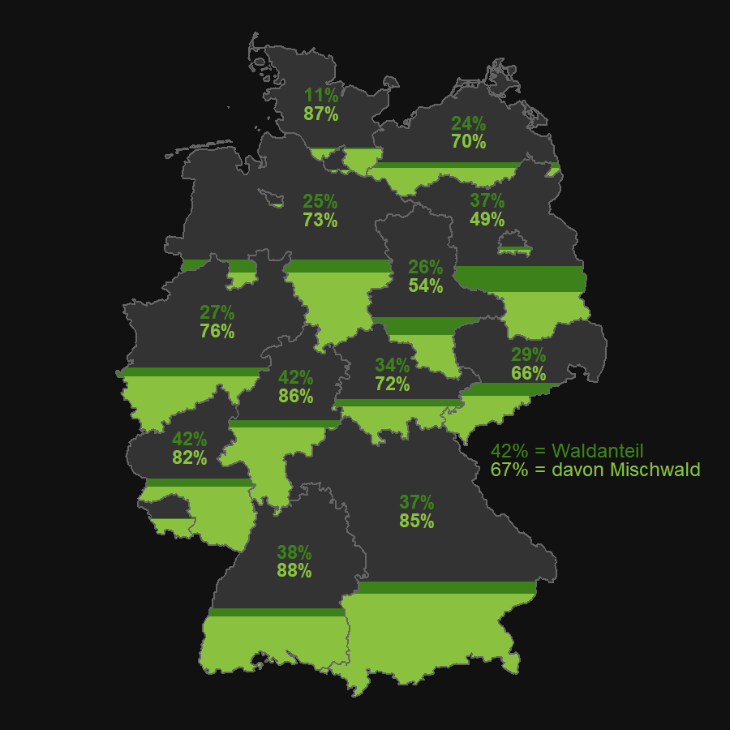

Forests in Germany
We want mixed Forests!
After the Second World War, the Germans planted fast-growing spruce trees in their forests, as reparations payments in the form of timber meant that large areas had to be reforested. Spruce trees are very good for building and were perfect for reforesting areas as quickly as possible. In the 1990s it was realised that single-species forests were not very stable and were particularly vulnerable to storms and bark beetles. Other ecological consequences also led to the conversion of forests into mixed forests. In some counties there were already many mixed forests, but in others there was still a lot of work to be done. The map below shows how much forest there is in each federal state and how much of it is mixed forest.
